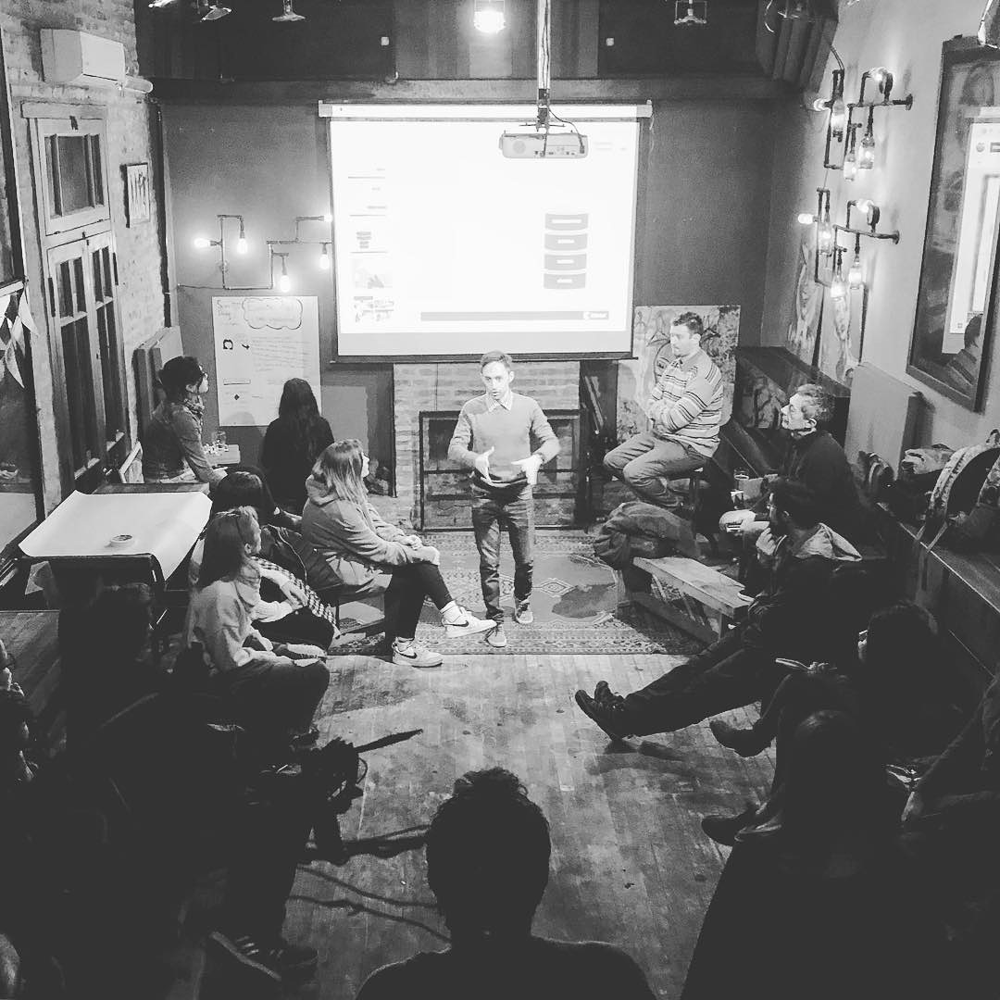

Exposición Senado de la Nación · Inteligencia Artificial · Mar 2026
CTO | Tech Executive | Advisor | Speaker
Turning Cloud, DataAAAAAA & AI into real outcomes~

I’ve been building things with technology for as long as I can remember.
My first encounter with a computer was at my public school in the early 90s, sitting in front of a Commodore 64. That’s where I discovered LOGO — and where my first digital “love” was a tiny turtle moving across the screen, drawing shapes one command at a time.
A year later I got my first home PC — I was 10. I got a fabulous AT286 PC, powered by a blazing 20 MHz processor, equipped with a “high-density” 5¼-inch floppy drive (1.2 MB), an amber monochrome monitor (yellow, for friends), and 1 MB of memory — and no hard drive at all. It even had one of those plastic covers you’d put on when it wasn’t in use, to keep it safe and dust-free.
Around the time I started secondary school, I discovered the internet — and suddenly the world had no borders. Email, IRC, people connecting from everywhere… it felt like magic. I spent most of my teenage years experimenting and building with HTML, CSS, and JavaScript, eventually turning that curiosity into income in the early days of the web.
Then the corporate chapter began. I joined bigger and bigger companies and, from day one, leaned into global delivery — long before it became the norm.
I’ve seen the stack evolve from managing Novell networks to Windows, Unix, and Linux in traditional on-premise datacenters, to moving workloads to the cloud. From classic deployments to engineering everything as code.
And now we’re entering the AI era — where infrastructure doesn’t just run systems, it powers intelligence.
I’ve operated at the intersection of building solutions and running them — while building teams that do both, across countries, regions, and time zones.
I’ve had the privilege of working inside some of the world’s largest technology companies, partnering with global organizations across industries and markets. That exposure shaped how I see technology: not as theory, but as something that behaves differently depending on context, culture, incentives, and execution.
I’m currently an Executive Technology Strategist at Microsoft, partnering with senior business leaders to translate data, AI, cloud, and security into measurable business outcomes. Previously, I led the Customer Success Data & AI organization across Spanish South America (SSA) — Argentina, Chile, Bolivia, Colombia, Ecuador, Paraguay, Peru, and Uruguay — and served as CTO and member of the subsidiary Leadership Team in Argentina, consistently focused on aligning technology strategy with business impact.
Before Microsoft, I was Global Leader of Multicloud Platforms at EY, building products and services across hybrid and cloud environments throughout the U.S., Europe, and Asia. Earlier, I led the firm’s Global Unix & Linux team.
And before that, I built and scaled technology teams at IBM during the early expansion of the Global Delivery Center, supporting U.S.-based clients — always from Argentina to the world.
I hold a Bachelor’s degree in Systems Analysis from ORT Argentina, that was later complemented by executive management programs at Universidad Torcuato Di Tella & Universidad de San Andrés, where I also served as thesis advisor for the Master’s in Digital Business program. I also currently serve as board member, technical advisor, and fractional CTO for several startups.
I’m an AI advocate — not in a hype-driven way, but with conviction. I believe AI is a transformative force that will fundamentally reshape how we work, decide, and build. That’s why I speak frequently about its business and societal impact, participating in events and media both in Argentina and internationally — including Forbes, La Nación, Clarín, Ámbito Financiero, Apertura, Information Technology, IDEA Management, Nerdearla, Campus Party, to name some.
Outside the office, I’m lucky enough to be married to Vicky and to be Miranda’s dad 🧡
We are foodies by nature and travelers by choice. We’re really fond of receiving people at home and grilling delicious things, and we love discovering new places & flavors. When we travel we’re stubborn about one thing: remain travelers, never drift into tourist mode. That’s how we stay curious. We try not just to visit places — we taste them. Culture can be layered, subtle, even hard to decode. But put people around a table and it gets real fast — shared plates, local markets, real conversations, at home or abroad.
As Anthony Bourdain said, food is one of the most honest ways to understand people.
That same mindset spills into the rest of my life. I’m a habitual runner — no full marathon yet, but getting there sprint after sprint. I play football at a very amateur level (heavy on enthusiasm, light on talent). I’m a coffee nerd. And I’m unapologetically devoted to a properly made Negroni — no shortcuts, ever.
Because whether it’s work in technology, travel, sport, coffee or cocktails, I’m drawn to things that reward patience, craft and consistency.
Selected appearances at conferences, summits, and media events.


.jpg)


.png)


Press coverage and media appearances over the years.
Interviews · Podcasts · Talks
Exposición Senado de la Nación · Inteligencia Artificial · Mar 2026

Director de Microsoft habla sobre Estrategia IA para empresas · IA sin humo

Un emprendedor puede tener las mismas herramientas de IA que CHEVRON

Jornada Power BI, Excel con IA y Finanzas · CPCECABA

Congreso AI Innovation Summit · Google & Microsoft

HISPANOCAN 2025 · Televisión Canaria

CIITI 2025 · Bloque Arquitectura

Tech Forum Argentina

Gen-AI Revolution Year II · 10mo aniversario de Nerdearla

Los secretos de la IA desde Microsoft · ¿Ya nos superó?

Demo OpenAI o1 · Generating Code

Innovación & Tecnología · Ámbito debate

NXT Conference · Beyond Data & AI: What's NXT?

Talento Tech · Entrevista

Conectado Talento Tech · Día 2

Exclusiva · Director de IA de Microsoft y cómo aplicar IA en empresas

El futuro está entre nosotros · La (Re)Evolución del AI Generativo

Modelos Generativos de Lenguaje para Empresas con Azure OpenAI

Futura Nerdearla

La (Re)Evolución del AI-Gen, los Copilotos y la creatividad algorítmica

Telecom SummIT 2023 · Inteligencia Artificial

Telecom SummIT · Entrevista Director Data & AI, Microsoft

Demo Soul Machines · El Futuro Está Entre Nosotros

Telecom SummIT 2023 · La tecnología se vivió

ImpuestosIDEA 2023 · IA + RPA y el futuro del profesional tributarista

La (Re)Evolución de la IA Generativa

Webinar AI

Micro entrevista · Thomas Dohmke, CEO de GitHub sobre AI y Copilot

ExperienciaIDEA 2023 · IA: Ayer ciencia ficción, hoy realidad

Seeds Table · Transformación Digital, Talento Tech y Big Data

El futuro de la Tecnología

Metaverso & Web3 · CTO de Microsoft en UNComa

Kyndryl Summit · IT Modernization

Aceleración Digital · The Good, The Bad & The Ugly

Gobierno Autónomo de La Paz · Ciudad en el Metaverso

ORT Alumni · Empresas en el Metaverso

Valencia College · Digital Transformation

After Office · Negocios Digitales en UdeSA

Jurado · Premio a la Excelencia Agropecuaria

La Nación Smart Data · La tecnología y su poder para generar oportunidades de negocios

Microsoft Ignite 2021 · Innovate across Hybrid and Multicloud with Azure Arc

Microsoft Ignite 2021 · Arc On-Demand Session

Microsoft Ignite 2021 · Azure Arc OD327

Microsoft Ignite 2021 · Azure Arc FS176

La Nación Smart Data · Capítulo 2

La Nación · Cápsula M30

La Nación · Resumen Innovación

El poder transformador de la innovación

Tech Intensity Keynote
Episodes where I've been a guest or speaker.
Find me across the web or book some time directly.